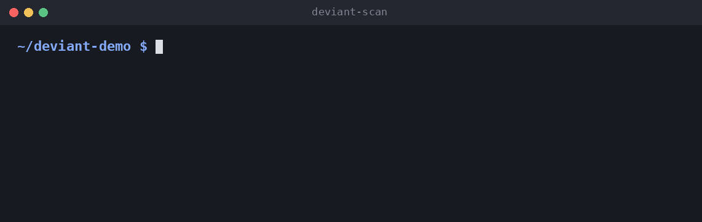

Deviant learns your project's own conventions, flags the exceptions, and shows the git history you need to judge them. You write no rules.
pip install deviant-scan
Every codebase runs on unwritten rules: every route checks auth, every CI job has a timeout, every action is pinned to a commit. Nobody writes them down, so nobody checks them. AI coding agents write code that looks right and passes tests, but can quietly forget the check every other route has.
Deviant counts what your code already does, picks out the rare item that breaks the pattern, and shows who changed it and why.
The scan is plain math on your machine: no AI, no API key, the same answer every time. The Claude Code skill adds the judgement.
Every FastAPI route, every CI job, every workflow step.
"47 of 48 do this." The rare items that don't are the exceptions.
Who last changed each exception, in which commit, and whether they wrote the compliant ones.
Claude labels each exception bug, intentional or unsure, and cites the line, test or commit that shows it.
Then it compares every handler and job with its siblings, for the bugs no count can see.
It reads and parses files only, and git evidence uses read-only commands. Scanned code is treated as data, never as instructions.
Bugs were planted in 16 repos the skill had never seen. The repos were chosen by a rule written down first, and the skill was frozen before the run.
| Bug kind | Claude alone | Claude with Deviant |
|---|---|---|
| All 84 bugs, 3 runs each | 70% | 82% |
| Workflow steps that ignore their failure | 54% | 83% |
| Route conditions turned the wrong way round | 94% | 93% |
| Removed job timeouts (8 bugs, one repo) | 38% | 25% |
| Cost for 60 runs | $8.82 | $5.70 |
Each check compares an item with its peers. A new check is one Python file.
A route missing the auth or rate limit its neighbours have. Auth set on a router or parent app counts, so routes protected from above are not reported.
An action not pinned to a commit, a job with no timeout or concurrency setting, a workflow with no permissions block, a step that ignores its own failure.
# needs Python 3.10+ and git
pip install deviant-scan
deviant-scan path/to/project --with-git
# or without installing anything
uvx deviant-scan path/to/project --with-git
Add --json for tools and --fail-on-findings to fail a CI job.
# judge each exception and review the code
/plugin install deviant --marketplace ImalkaPerera/deviant
/deviant:deviant path/to/project
Each finding comes back as bug, intentional or unsure, with proof. How the skill works.
A check is one Python file that collects facts. Deviant does all the counting.
A non-root user and a pinned base image. The contributor guide has it written out.
Route checks, in the same way the FastAPI check works.
So findings show in GitHub code scanning.